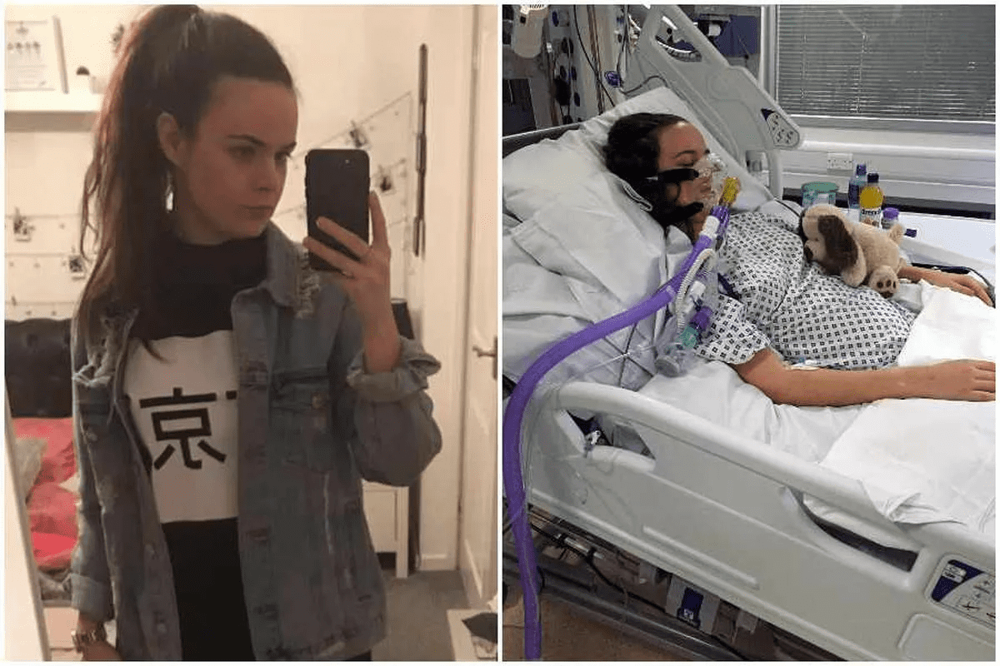
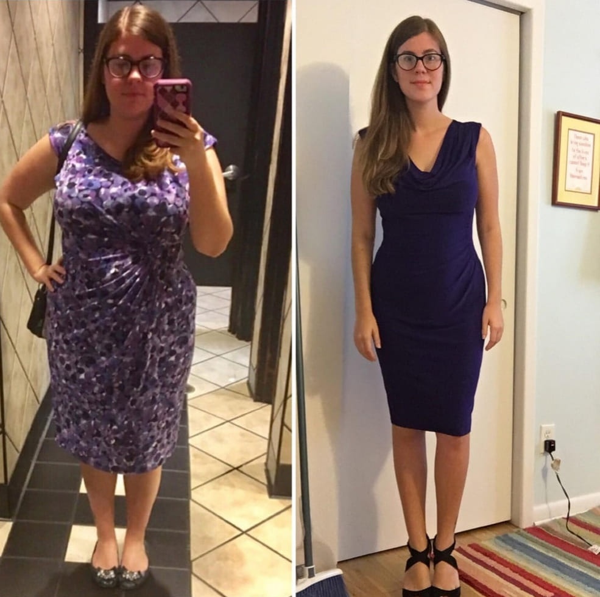
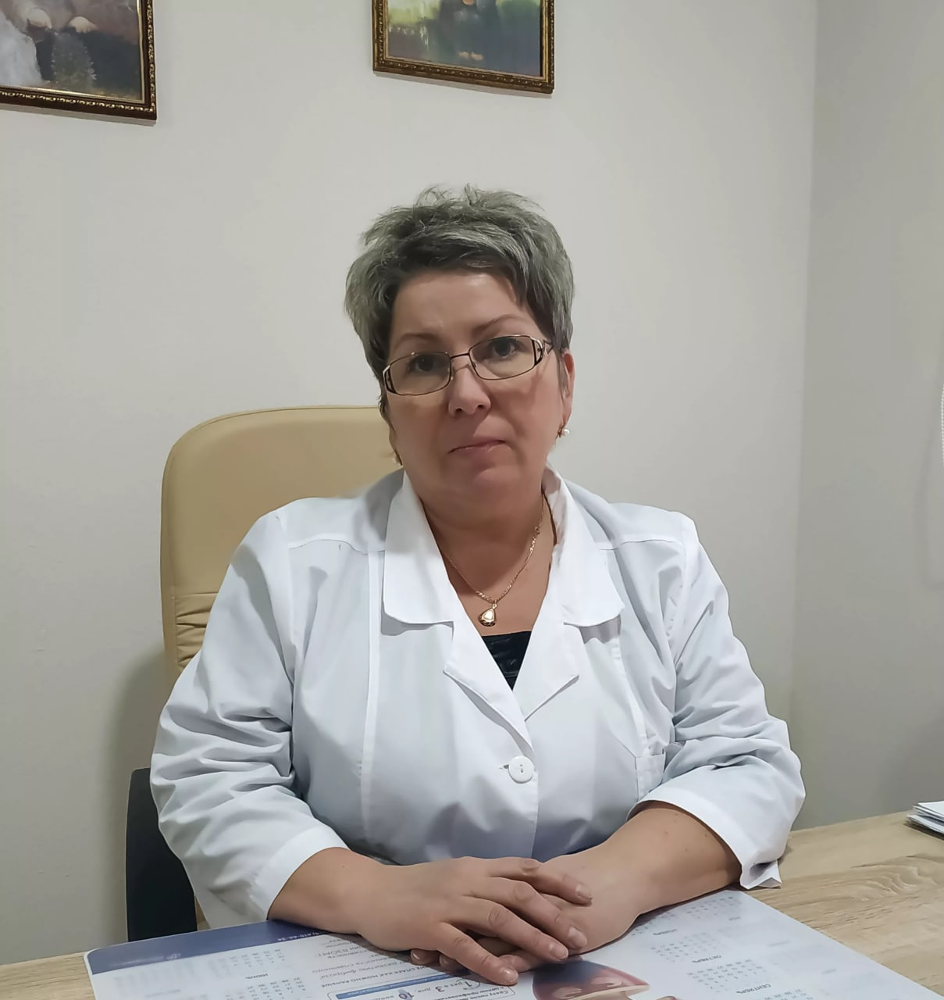
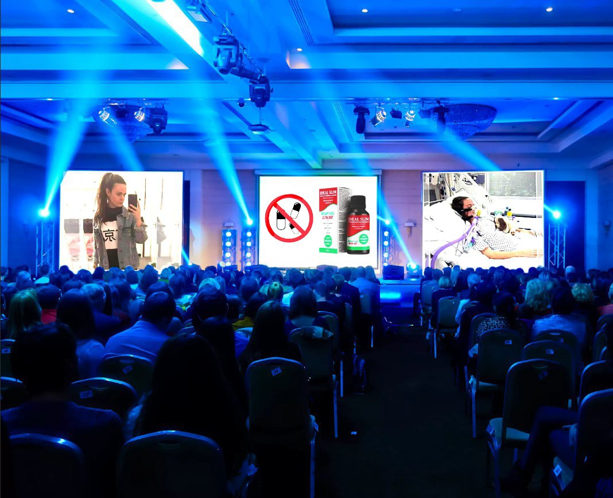

Nedávný případ šokoval veřejnost. 18letá studentka z České republiky upadla do kómatu po užití tablet
na hubnutí. Lékaři po celém světě jsou incidentem znepokojeni a požadují zákaz volného prodeje
přípravků na hubnutí.
Pro pochopení problematiky jsme shromáždili několik názorů hlavních odborníků v oblasti medicíny. Tady
je jejich vyjádření:

Petr Machovský
Endokrinolog
Praxe v oboru: 35 let
Moderní metody hubnutí často vedou k otravám, nedostatku živin a rozvoji různých onemocnění. Negativní
následky mohou nastat jak u začátečníků v hubnutí, tak u zkušených.
Ve skutečnosti je většina metod hubnutí, dokonce i ty inzerované v televizi, extrémně nebezpečná pro
zdraví. Diety a cvičení fungují na stejném principu: uvést tělo do stresu a vyčerpat celou zásobu
energie. Taková taktika vede k tomu, že se organismus stává zranitelným vůči nebezpečím vnějšího
prostředí.
U prášků je situace ještě horší. Chemické složky útočí na tělo a dělají ho nejen zranitelným, ale
dokonce i zasahují do nejslabších míst a vyvolávají rozvoj těžkých onemocnění jako je celiakie,
cukrovka, Crohnova choroba, žaludeční vředy, srdeční selhání a další.
Užívat léky na hubnutí bez lékařského předpisu se absolutně nesmí. Může to vést k příšerným
následkům, jako se to stalo studentce z České republiky.

Jak řekla Petra Koutná - ta samá studentka, lékaři na pohotovosti, pilulky na hubnutí brala jen pár dní.
Tato doba však stačila k útoku na mladý organizmus a deprivaci jeho energetické rezervy a poté ještě
vyvolání těžké alergické reakce.
Vím, že nyní, téměř týden po incidentu, se Petra Koutná probrala z kómatu a nyní je na jednotce
intenzivní péče pod lékařským dohledem. Dívka s největší pravděpodobností přežije, ale jaké jsou
následky...zůstává otázka zda se z otravy uzdraví nebo zůstane doživotně invalidou.
Není to poprvé, co populární metody hubnutí vedou k tak negativnímu výsledku. Takových případů
bohužel každým rokem přibývá.
Vinu však nelze svádět pouze na lidi, kteří se snaží zhubnout pomocí populárních metod, lze je pochopit.
Často si jednoduše neuvědomují že mohou existovat bezpečné alternativy. Aby to zjistili, musí jít k
lékaři, což je pro ně trapné.
Chodí tedy ke známým nebo což je ještě horší do lékáren a doufají, že najdou řešení. A tam narazí na
lakomé lékárníky, jejichž cílem je prodat co nejvíce. Lékárníci nejsou lékaři, nejsou zodpovědní za
životy, nemyslí na následky a mlčí o rizicích.
Petra Koutová se vydala stejnou cestou, vzala si prášky plné chemikálií a za necelý týden upadla do
kómatu. Považuji za svou povinnost udělat vše pro to, aby k takovým případům nedocházelo, proto chci
čtenářům říci o účinných produktech na hubnutí, které neškodí.
Existuje malá kategorie skutečně účinných přípravků na hubnutí, které lze užívat bez lékařského
předpisu a předchozí konzultace s lékařem. Takových produktů je málo, ale existují. Mezi nimi je
za lídra považován bylinný doplněk stravy .
Proč je bezpečným produktem? Protože tento doplněk obsahuje pouze přírodní složky. Žádné
nebezpečné chemikálie a pouze bylinné benefity.
je 100% přírodní komplex pro hubnutí, formování postavy a celkovou pohodu. Obsahuje velké
množství biologicky aktivních látek, vitamínů a antioxidantů.
Navzdory svému přírodnímu složení je přípravek stejně účinný jako jeho chemické protějšky. S jeho pomocí
je možné za pouhé 4 týdny zhubnout od 10 do 15 kg.
Během kúry nemusíte držet dietu ani sportovat. Stačí 2x denně zředit 30 kapek ve sklenici vody
a vypít.
Na rozdíl od jiných metod hubnutí je činnost zaměřena na posílení těla a normalizaci
přirozených procesů. Jednoduše řečeno, pomáhá tělu znormalizovat metabolické procesy a
odstranit stagnaci tekutin. Pak už v dobré kondici se tělo bude samo zbavovat tukových usazenin v
problémových oblastech.
Tento doplněk doporučuji všem pacientům, kteří chtějí zhubnout a není jediný člověk, kterému by to
neprospělo.
Zde je několik obrázků mých pacientů, kteří zhubli díky přípravku :

Tereza Susková
29 let

Pavel Vašek
54 let

Zdeňka Sitárová
41 let
Můj názor je, že riskovat své zdraví a používat nebezpečné metody hubnutí jako jsou diety, pilulky a
fyzické přetížení je absolutně bezpodstatné, když existuje tak účinný produkt, jako je .
Petr Krejčí
Dietolog
Praxe v oboru: 29 let
Případy, jako je případ studentky z Česka, bohužel nejsou ojedinělé. Lidé nadále považují diety nebo
farmaceutické pilulky za dobrý nástroj na hubnutí.
Naštěstí se v posledních dvou letech začaly v České republice objevovat bezpečné přípravky na hubnutí.
Nejpopulárnější z nich je , bylinný doplněk na bázi organických extraktů: opuncie, papája, pitahaya.
Tento produkt považuji za špičkový a doporučil bych jej jako primární i preventivní nástroj na hubnutí.
A to vše proto, že přípravek nepůsobí negativně a k hubnutí nedochází kvůli dehydrataci nebo omezení
stravy, ale díky zrychlení metabolismu.
Během kurzové aplikace probíhá v těle celý komplex různých mikroprocesů.
Nejdůležitější z nich je zrychlení metabolismu. Molekuly se vážou na toxiny a spolu s nimi se
vylučují z těla. Paralelně s tímto procesem další prospěšné molekuly detekují tukové buňky, slepují je
dohromady a také je odstraňují přesně ten tuk, který se ukládá na vašem břiše a stehnech.
Pročištěním těla doplněk pomáhá stimulovat metabolismus. Současně se tělo učí nehromadit bílý tuk, což
pomáhá zakotvit výsledky hubnutí.
Tak během jediného kurzu trvajícího v průměru 4-6 týdnů je tělo kompletně přestavěno na zrychlený
metabolismus a nezávisle reguluje tělesný tuk, čímž zabraňuje jeho opětovnému hromadění. To znamená, že
ztracené kilogramy se už nikdy nevrátí!
Teď je mým jediným doporučením pro pacienty s nadváhou, je . 99 % ze 100 % pacientů, kteří
prošli kúrou , se vrací s vynikajícími výsledky. Daří se jim nejen
zhubnout, ale také zlepšit celkovou pohodu. To vám nedá žádná dieta, pilulka ani liposukce!

Jana Malinová
Vedoucí oddělení dietologie
Praxe v oboru: 21 let
Za posledních 10 let se obezita stala strašlivou. Stále více lidí se obrací na lékaře s žádostí o pomoc
při hubnutí. Nejčastěji se tito lidé již pokusili zhubnout sami pomocí diet, posilovny a dokonce i
operací. Ale výsledku nedosáhli, nebo byl výsledek minimální a nepřiměřený vynaloženému úsilí.

Předchozí pokusy zpravidla způsobují nenapravitelné poškození zdraví, i když pacient sám změny
stavu nezaznamená. Způsobená poškození nejsou vždy tak závažná jako v případě studenta z České
republiky. Ale v každém případě se tělo stává oslabeným, náchylným k alergiím a dalším nemocem.
To komplikuje proces zadávání dalších doporučení. Musíte přemýšlet o tom jak jeden, nebo druhý produkt
ovlivní tělo pacienta, řekněme alergika nebo mladé matky.
Na přípravku se mi líbí, že to je na 100% bezpečný produkt. Je
zaměřen na posílení imunitního systému a nemá vedlejší účinky. Doporučuji ho pacientům, kteří
dříve zažili hormonální selhání nebo mají problémy s trávicím traktem a pomáhá skvěle! Pacienti se vracejí a děkují mi za doporučení, protože s jeho pomocí se jim podařilo zhubnout 10 a více kilogramů za pouhých pár týdnů.
POZNÁMKA REDAKCE:
Díky lékařské iniciativě a nadaci „Zdravá populace“ pořádá výrobce promo týden. Od do
včetně originálního produktu je dostupný s 50% slevou.
Chcete-li získat produkt s 50% slevou, vyplňte níže uvedený objednávkový formulář. Do polí
aplikace zadejte své jméno a telefonní číslo a počkejte na zavolání od zaměstnance, který vysvětlí
podrobnosti. Objednávka bude doručena kurýrem vám domů do 3-5 dnů. Platba je na dobírku.